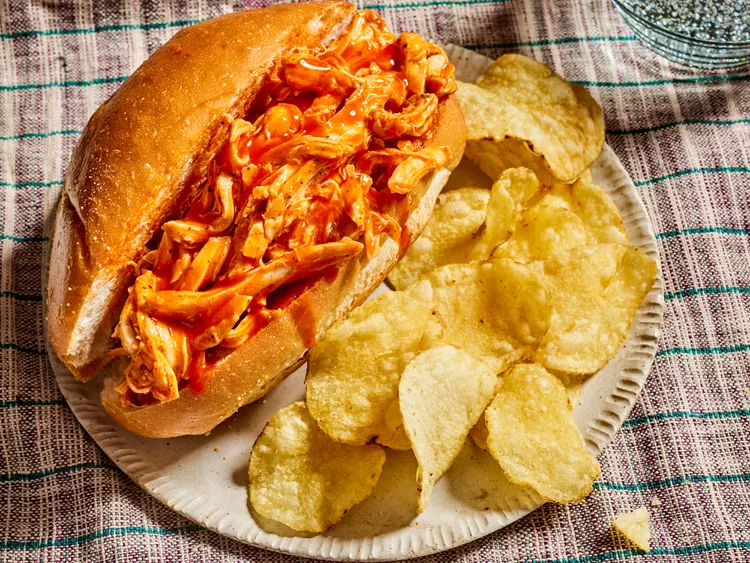

Home
Buffalo Chicken Sandwhich Recipe

Description
This crockpot Buffalo chicken makes delicious, hearty sandwiches that are perfect for fans of Buffalo wings. It's an ideal recipe for game days, and I love topping it with blue cheese or ranch dressing.
Ingredients
- 4 skinless, boneless chicken breast halves
- 1 (17.5 fluid ounce) bottle Buffalo wing sauce, dividied
- 1/2 (1 ounce) package dry ranch salad dressing mix
- 2 tablespoons butter
- 6 hoagie rolls, split lengthwise
Steps
- Gather all ingredients.
- Place chicken breasts into the slow cooker; pour in 3/4 of the wing sauce and ranch dressing mix.

- Cover and cook on Low for 6 to 7 hours.
- Shred chicken in the cooker with two forks. Stir in butter.

- Pile shredded chicken and sauce onto hoagie rolls. Serve with remaaining Buffalo sauce.

- Serve and enjoy!
